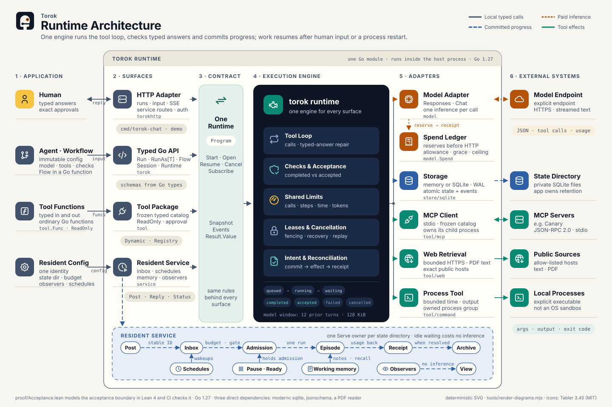

Configuration, not a process
A model, instructions, tools and checks, built once. A question returns a typed answer. A failed check becomes repair feedback until the answer passes or the budget ends.
Private · Go agent harness
török /ˈtørøk/ · Hungarian for Turk. Named after Kempelen's chess automaton, the machine that played well because a person sat inside. Torok keeps the person in the loop on purpose.
Torok runs the tool loop, checks the typed answer and commits progress, so a run resumes after a person answers or the process comes back. You bring a model and ordinary Go functions. Desk runs on it.
$ ./demo.sh ━━ 1. Start a durable job and stop at the human review $ automation -db review.db -review README.md docs/concepts.md Scripted demo: summaries are scripted; files are read locally and progress is saved. Accept this report? {"files":2,"lines":336,"text":"Read 2 files containing 336 lines."} ✔ The process has exited. The job is waiting in review.db; no worker holds it. ━━ 2. Inspect the store: the run waits, and its events are committed $ torok -db review.db describe example-summary Program file-summary Status waiting Usage model calls 1, tool calls 2, steps 4, known tokens 0, unknown calls 0, active 6ms Pending f1f849d0… (input): Accept this report? $ torok -db review.db events example-summary 1 run.started 2 tool.started root/file-0/read 3 tool.started root/file-1/read … 10 model.started root/summarize 11 model.finished root/summarize 12 check.finished root/summarize 13 input.requested root/review 14 run.waiting ━━ 3. Approve from a new process $ automation -db review.db -approve Read 2 files containing 336 lines. Model calls: 1; file reads: 2; status: accepted ━━ 4. The event log continues where it stopped $ torok -db review.db runs ID PROGRAM STATUS PENDING UPDATED example-summary file-summary accepted 0 0s $ torok -db review.db events example-summary … 14 run.waiting 15 input.received root/review 17 check.finished root 19 run.finished
Why Torok
A run calls a model several times, runs your functions in between, spawns children, waits minutes or days for a person, and can be interrupted at any point. A request handler cannot hold that shape, and a model must not be trusted to remember it. Five small primitives carry the work instead.
A model, instructions, tools and checks, built once. A question returns a typed answer. A failed check becomes repair feedback until the answer passes or the budget ends.
func(ctx, In) (Out, error) with a name and a description. Effectful by default. Read-only is a promise you make; approval is a stop you ask for, on the exact call.
A function of a context, a Flow and your input. Steps record effects, children run in parallel, a question parks the run. The body replays from its checkpoints after a restart.
Model calls commit before any tool runs; intent commits before an effect. One allowance on the root covers every child. Memory or SQLite underneath, an HTTP and SSE surface on top.
A durable inbox, timers, bounded memory, observers with their own freshness, daily admission budgets, pause. Idle costs nothing. Desk is one.
The whole shape fits in three statements. No graph DSL, no builder chain: generic methods where a type belongs on a value, plain functions for behaviour, named config fields.
// An ordinary Go function becomes a tool.
quote := tool.Func("quote", "Last close for a symbol", lastClose, tool.ReadOnly())
// A model and its tools become an agent.
analyst, err := torok.New(torok.Config{Model: llm, Tools: []tool.Tool{quote}})
// A question returns a typed, checked answer.
answer, err := analyst.RunAs[Close](ctx, "What did NVDA close at?")The harness sits between your functions and the store. Model and tool adapters are the only code that leaves the process, and both report to the same limits. The resident service and the HTTP adapter sit on the same runtime. There is no second engine.

Torok is the harness under Desk, which reviews an Interactive Brokers book on the market's clock and asks its owner only the questions that need a person. Private, experimental API, Go 1.27, three direct dependencies: SQLite, JSON Schema, a PDF reader. If you want to argue about what "accepted" should mean, get in touch.